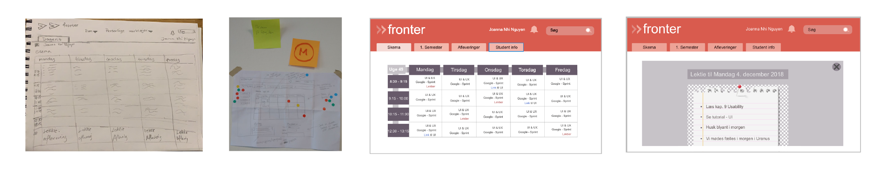
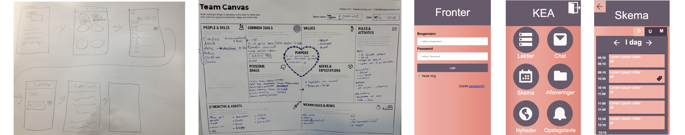
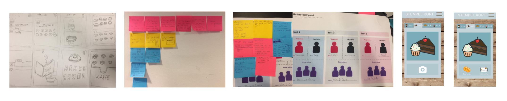

Dette emne handler blandt andet om Design Sprint som er en forløb over 4 dage, dagene kan indebærer steps, metoder, øvelser og test. Vi får afprøvet forløbet i fællesskab men også i grupper. User research vedrøre alt ved brugeren, for at kende og forstå segmentet. Vi lærer at bruge Team Canvas som er en anden måde at lave gruppe kontrakt på. Vi får lært at lave prototyper ved hjælp af Adobe XD. Usability - er brugertest, en måde at teste dit produkt eller idé.
Efter at have været igennem User brief, som omhandlede om data indsamling (interview af Frederikke, undersøgelse af målgruppens brugere,brugerens mål og brugeren rejse). Udførte jeg 3 usability test. Formålet med brugertesten var, at få et indblik over fronters funtionalitet, overskuelighed og navigation. Det viste sig, at dataen fra testpersonen Julie som studere MMD, ikke var så brugbar fordi hun nemt kunne løse testopgaverne.
Første dag stemte vi fælles, om et langsigtede mål, det blev: "Om 2 år er fronter de studerendes fortrukne værktøj til at udvikle undervisningsaktiviteter " og Sprint spørgsmålet var: "hvordan kan vi vise dagens personlige program?". Vi benyttede os af Solution Sketch til at finde de 5-8 bedste sketch, som vi efter arbejde videre på.
Jeg valgte en sketch, som jeg arbejde videre med i Adobe XD. Jeg tog udgangspunkt i desktop version. Der var krav om, at følge et styletile som var uddeligeret, derfor har min prototype ikke ikke Fronter's orginale farver. Jeg udarbejde en usability test, jeg valgte én af de testpersoner, som tidligere havde testet Fronters site, for at se om min prototype var et bedre udkast, end det hun testede før.
Dette var en gruppe opgave, det var en andet forsøg på et udkast, af en App prototype ud fra samme Design Sprint fra sidste forløb. Vi valgte forskellige dele, fra 3 forskellige prototyper af gruppen, hvor efter vi samlede det i et og designede det, så det havde samme design. Denne gang skulle prototypen kodes i HTML og CSS, efter skulle sitet brugertestestest. Testen var brugbart, hun nævnte at tilbage knappen helst, ikke skal helt tilbage til start siden, og at dag, uge og måned bliver til dum, den havde vi bemærkede inden, men vi valgte at arbejde videre med det.
Dette var en gruppe projekt. Vi skulle udarbejde en App, som vi synes de studerende på KEA mangler. Vi valgte at lave en kantine app. Vores er langsigtet mål var at: "Gøre studielivet baseret på mobile device lettere " og sprint spørgsmål: "Hvordan gør vi studie aktiviteterne, mobil venlige?". I vores map valgte vi at fokusere på learning fordi vores app skulle være løsningen, til at nå goal. Vi gjorde os brug af øvelserne Lightning demo, Ideas, Crazy 8 i Sketch processen. Vi endte med at snakke og blev sammen enig om hvilke sketches vi synes var bedst.
The user flow lavede inden vi udarbejdede Storyboard, for ikke at fastlåse storyboardet indtil til sidst hvor vi tegnede the færdigt. Vi testet prototypen via en Grid testen, vi fik konkruktiv feedback som vi valgte bruge, for eksempel havde vi en kamera icon, som havde den funktion at skanne QR-koder, men der var ingen af test personer som forstod dens funktion, det ændrede vi.
Vi skulle nu sælge vore kantine prototype. Vi prøvede at fange opmærksomheden gennem "Needs" og fortælle om et situationen, de selv kunne relatere til. "Approach" vi fortalte at vores prototype har været testet og feedbacken var at, det er en og overskuelig løsning til din travle hverdag. "Benefits" Appen er gratis, til fordel spare du at download den.
Det jeg har lært af Design Sprint er der er rigtig mange øvelser og metoder, som sprintet byder på, de er med til at folde procssen ud, man kommer dybere ind i opgaven og man reflektere over en bred vifte, hvorefter bliver det beskæret ned, til det fælles skabet har stemt. Det er en god måde at få diskuteret og inddraget alle i gruppen, men også bruge post it og få det hængt op, så man altid kan gå tilbage og tilføje eller fjerne noget. Usability er blevet brugt til de forskellige prototyper, jeg har lært: hvordan jeg skal udføre et, men også efterarbejdningen af resultatet.